MŰVÉSZEK / Artists
BALLA Csönge (1988, Ungvár)
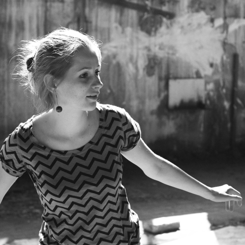
Balla Csönge korábban az ELTE szociológia szakán végzett, jelenleg a Magyar Képzőművészeti Egyetem tervezőgrafikus hallgatója. Művészeti gyakorlata során aktuális politikai és társadalmi kérdésekkel egyaránt foglalkozik. Aktivistaként tevékeny szerepet vállalt az elmúlt évek nagyobb civil megmozdulásaiban. Fontosabb projektek, kiállítások: (0), Clark Ádám tér, Teleport Galéria, 2015; A mind1 átka, Facebook, 2014; Poster for tomorrow, világszerte, 2013; Fényújság, Budapest 2013. Behance portfólió
/ Csönge Balla received her Master’s Degree in Sociology from Eötvös Loránd University; currently she studies Graphic Design at the Hungarian University of Fine Arts. Her artistic expressions encapsulate both political and social questions. As an activist she has been actively involved in social justice causes and civil movements in recent years. Important projects, exhibitions: (0), Clark Adám Square, Teleport Gallery, Budapest, 2015; A mind1 átka, Facebook, 2014; Poster for tomorrow, worldwide, 2013; Fényújság, Budapest 2013. Behance portfolio
BORSOS Lőrinc (2008, Budapest)
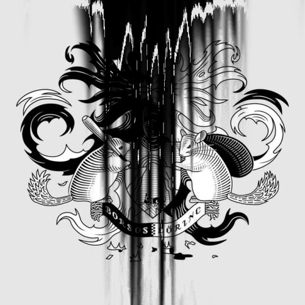
Borsos Lőrinc két képzőművész, Borsos János és Lőrinc Lilla hibridje. Egyaránt rendelkezik a Magyar Képzőművészeti Egyetem tervezőgrafikusi és festői diplomájával. Működésének első öt évében a magyar nemzeti identitás kérdéseire koncentrált, az önreflexív országimázs megteremtéseinek lehetőségeit vizsgálva. Ezután a történelem sötét oldalának tágabb összefüggései kezdték foglalkoztatni, mellyel egyidejűleg önfeltáró munkába fogott. Saját címerrel rendelkezik, védjegye az általa gyakran használt fekete zománcfestékből származó “sötét anyag”, azaz fényes fekete. Borsos Lőrinc Székesfehérváron él és Budapesten dolgozik. Önálló kiállításai: Kiállítás, Viltin Galéria, Budapest, 2013; Virágnyelven, Edwin Scharff Museum, Neu-ulm, 2014; Babel – solo-show, India Art Fair, Delhi, 2013; Kiállítás szüleinknek, Szent István Király Múzeum, Székesfehérvár, 2012; Mozdíthatalan ország, Viltin Galéria, Budapest, 2010; Diákhitel tartozásom forintban, OctogonArt Galéria, Budapest, 2009. További információ
/ Lőrinc Borsos is in fact the hybrid of two artists: János Borsos and Lilla Lőrinc. Lőrinc Borsos graduated from the Hungarian University of Fine Arts both as a graphic designer and as a painter. During the first five years of Lőrinc Borsos’ artistic career, they have focused on the issues of national identity, examining the possibilities of a self-reflective national identity. Following this period Lőrinc Borsos favoured reflecting on the dark, unjust side of history; meanwhile Lőrinc Borsos began a process of self-observation. Lőrinc Borsos have their own coat of arms; their trademark is the shiny black substance derived from the black enamel paint often found in their work. Lőrinc Borsos lives in Székesfehérvár and works in Budapest. Solo shows: Kiállítás, Viltin Gallery, Budapest, 2013; Virágnyelven, Edwin Scharff Museum, Neu-ulm, 2014; Babel-solo-show, India Art Fair, Delhi, 2013; Kiállítás szüleinknek, Szent István Király Múzeum, Székesfehérvár, 2012; Mozdíthatatlan ország, Viltin Gallery, Budapest, 2010; Diákhitel tartozásom forintban, OctogonArt Gallery, Budapest, 2009. For more information
GRÓF Ferenc (1972, Pécs)
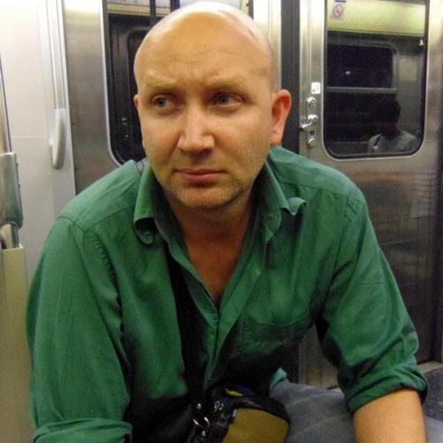
Gróf Ferenc képzőművész és tanár, a Magyar Képzőművészeti Egyetemen szerzett diplomát, 2012 óta a bourges-i École Nationale Supérieure d’Art (ENSA) oktatója. Tervezőgrafika és térbeli kísérletek keresztmetszetében létrejövő munkái ideológiai lenyomatokkal foglalkoznak. Alapító tagja a 2004-ben létrehozott, párizsi székhelyű Société Réaliste művészcsoportnak, mely kollektíva fókuszában a kortárs politikai reprezentáció kérdései és szöveg központú intervenciók állnak. Gróf Ferenc Párizsban él és dolgozik. A Société Réaliste fontosabb önálló kiállításai a közelmúltból: amal al-gam, acb Galéria, Budapest, 2014; Egyetemes himnusz, transit.ro, Kolozsvár, 2013; A Rough Guide to Hell, P!, New York, 2013; Thelema of Nations, Galerie Jérôme Poggi, Párizs, 2013; empire, state, building, MNAC, Bukarest, 2012, Ludwig Múzeum, Budapest, 2012, Jeu de Paume, Párizs, 2011.
/ Ferenc Gróf is an artist and a teacher. He is a graduate of the Hungarian University of Fine Arts, Budapest and has been teaching since 2012 at the École Nationale Supérieure d’Art (ENSA) in Bourges. His work considers ideological footprints at the intersection of graphic design and spatial experiences. He is a founding member of the Parisian co-operative Société Réaliste – established in 2004 – whose work considers questions of contemporary political representations, ideological design, and text-based interventions. Ferenc Gróf lives and works in Paris. Société Réaliste’s recent solo exhibitions: amal al-gam, acb Galéria, Budapest, 2014; Egyetemes himnusz, transit.ro, Cluj Napoca, 2013; A Rough Guide to Hell, P!, New York, 2013; Thelema of Nations, Galerie Jérôme Poggi, Paris, 2013; empire, state, building, MNAC, Bucharest, 2012, Ludwig Múzeum, Budapest, 2012, Jeu de Paume, Paris, 2011.
KARAS David (1987, Nürnberg)
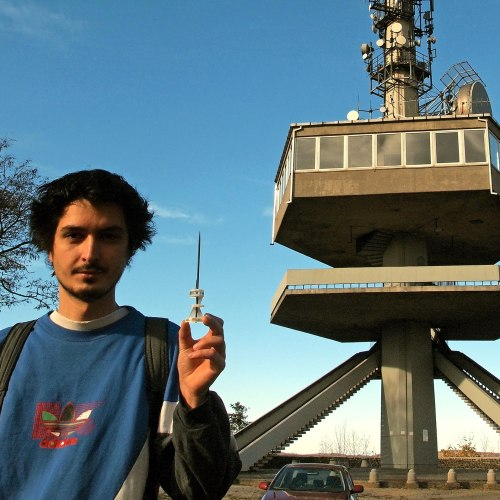
Karas David a Magyar Képzőművészeti Egyetem Intermédia tanszékén diplomázott, jelenleg az MKE Doktori Iskolájának hallgatója. Kutatási területének középpontjában a magyarországi helytörténeti gyűjtemények állnak, azok gazdag anyagának feldolgozása korábban az önreprezentáció lehetőségéhez nem jutott csoportokkal együttműködve. Fontosabb csoportos kiállításai, projektjei a közelmúltból: Bibliográfia, Gallery by Night, Ötnapos terv, FKSE 2015; A legtöbb, Az FKSE hagyományőrző éves kiállítása, 2014; Artonautics, Gdańska Galeria Miejska, Gdańsk, 2014; 0m2.hu, 2014; Betűszedés, FKSE, Budapest, 2013; Kockázati tényező, Modem, Debrecen, 2013; A negyedik modell?, Labor Galéria, Budapest, 2013. További információ
/ Karas David graduated from the Intermedia Department at the Hungarian University of Fine Arts; he currently studies at the Doctoral School of the university. His research focuses on local historical museums, he invites members of social groups that previously had no chance of self-representation to participate in processing the collections for such museums. Recent projects: Bibliográfia, Gallery by Night, Ötnapos terv, FKSE, Budapest 2015; A legtöbb, Az FKSE hagyományőrző éves kiállítása, 2014; Artonautics, Gdańska Galeria Miejska, Gdańsk, 2014; 0m2.hu, 2014; Betűszedés, FKSE, Budapest, 2013; Kockázati tényező, Modem, Debrecen, 2013; A negyedik modell?, Labor Gallery, Budapest, 2013. For more information
NEMMIVOLTUNK! Crew feat. BÓDI Lóránt (1987, Tata)
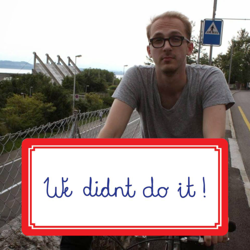
A Nemmivoltunk! Crew egy 2009 óta működő művészcsoport, melynek tevékenysége napjaink hétköznapi jelenségeire fókuszál élménykiállítások, installációk, köztéri alkotások formájában. Az elmúlt években számos hazai és nemzetközi csoportos és egyéni projektben működtek közre. Sajátos módon ötvözik a különböző médiumokat (képalkotás, installáció, mozgókép) a rájuk jellemző felszabadult humorral és diszkurzív gondolatisággal. További információ. Bódi Lóránt (1987, Budapest) társadalomtudós, az ELTE BTK kommunikáció és médiatudomány szakirányon szerzett mesterfokozatot, jelenleg az ELTE BTK, Atelier PhD hallgatója. Kutatási területei: holokausztról folyó társadalmi diskurzusok a koalíciós időszakban, valamint a szocialista múlt és a neoavantgárd emlékezete. 2014 óta Brückner Jánossal közösen Default Productions név alatt művészeti tevékenységet is folytat. Tanulmányai rendszeresen jelennek meg magyar nyelvű folyóiratokban. Bódi Lóránt Budapesten él és dolgozik.
/ The work of the Hungarian art group Nem mi voltunk! Crew (That Wasn’t Us! Crew) involves exhibitions, installations, and public art projects that deal with common phenomena from our everyday lives. In recent years the group contributed to several solo and group shows in Hungary and abroad. In their inventive use of different mediums (images, installations, motion pictures) humour meets discursive thinking. More information. Lóránt Bódi graduated from The Eötvös Lóránd University with a Master’s degree in Media and Communication. He is currently a PhD student at Atelier – Department of European Social Sciences and Historiography. His research field involves, on the one hand, the public discourse on Holocaust during the time of the coalition between 1944 and 1949, and on the other, the memory of the socialist past and the neo-avantgarde. His essays are regularly published by Hungarian periodicals. He lives and works in Budapest.
RUDAS Klára (1983, Budapest)
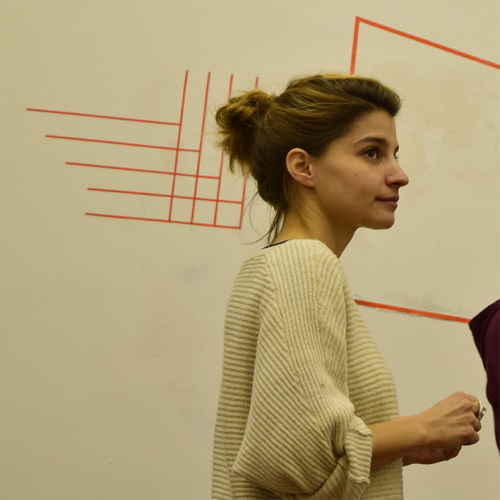
A Magyar Képzőművészeti Egyetem festő szakán szerzett diplomát, illetve a Novusz Művészeti Iskola grafika szakát is elvégezte. 2014. áprilistól 2015. novemberig a Fiatal Képzőművészek Stúdiója Egyesületének vezetőségi tagjaként dolgozott. Munkáiban az „absztrakció” fogalmának újraértelmezésére tesz kísérletet olyan művek létrehozásán keresztül, melyek arra a környezetre reagálnak, melyben létrejöttek, vagy amelyben megmutatkoznak. Mivel az absztrakt művészetet a művészet önreflexiójaként értelmezi – jelen helyzetben, amikor a művészet talán új területen mutatkozik meg vagy más területekre szorul, mint eddig – számára a legérdekesebb kérdés, hogy melyek azok a terek (közegek, diskurzusok), amelyek nyitottak ezen művészet befogadására/újraértelmezésére. Fontosabb csoportos kiállításai: Esterhazy Művészeti Díj jelöltek kiállítása, Magyar Nemzeti Múzeum, 2015; Utópia mint gyakorlat Flohr Zsuzsival, FKSE Gallery by Night, FKSE 2015; Tértágítás, TIT, Teleport Galéria, 2015; Jelzés a Világba kiállítás Dobó Gábor irodalomtörténésszel és Szeredi Merse Pál művészettörténésszel, Kassák Múzeum, 2015; Terítve, Latarka Galéria, Lengyel Intézet, 2014; Alaptanterv, Labor Galéria, 2014; A mi holokausztunk FKSE, 2014; A legtöbb, FKSE éves kiállítása, 2014; Magyar Képzőművészeti Egyetem diploma kiállítása, Barcsay Terem, 2014; A mind1 átka, Facebook, 2014; Hősök Helye, Higgs Field Galéria, 2014.
/ Klára Rudas graduated from the Painting Department at the Hungarian University of Fine Arts; she also graduated as a graphic designer from Novus Art School Budapest. Between April 2014 and November 2015 she was a board member of the Studio of Young Artists’ Association. Her main interest is reinterpreting the idea of “abstraction” through works that reflect either on the context of their creation, or their presentation. Since she considers abstract art as art’s self-reflection – which means in this case that art appears in/is forced into new fields –, the most important question for her is what fields (communities, discourses) are open to take in and reinterpret as art of this kind. Recent projects: Esterhazy Művészeti Díj jelöltek kiállítása, Magyar Nemzeti Múzeum, Budapest 2015; Utópia mint gyakorlat with Flohr Zsuzsi, Gallery by Night, FKSE 2015; Tértágítás, TIT, Teleport Galéria, Budapest 2015; Jelzés a Világba kiállítás with Dobó Gábor and Szeredi Merse Pál, Kassák Múzeum, Budapest 2015; Terítve, Latarka Galéria, Lengyel Intézet, Budapest 2014; Alaptanterv, Labor Galéria, Budapest, 2014; A mi holokausztunk FKSE, Budapest 2014; A legtöbb, The FKSE’s 2014 Traditional Annual Exhibition, Budapest, 2014; Magyar Képzőművészeti Egyetem diploma kiállítása, Barcsay Terem, Budapest, 2014; A mind1 átka, Facebook, 2014; Hősök Helye, Higgs Field Galéria, Budapest, 2014.
KURÁTOR / Curator
DON Tamás (1991, Budapest)
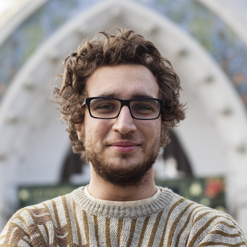
2014-ben diplomázott a Magyar Képzőművészeti Egyetem képzőművészet-elmélet szakának BA képzésén, jelenleg ugyanennek a tanszéknek a mesterképzésén másodéves hallgató. 2015 őszétől a Fiatal Képzőművészek Stúdiója Egyesület vezetőségi tagja. Érdeklődési területei közé tartozik az 1960-1970-es évek progresszív művészete és intézményrendszere. A kortárs művészeten belül leginkább a társadalmi és politikai problémákra reflektáló projektek foglalkoztatják, valamint az intézményrendszer és a festészet helyzete, lehetőségei. Fontosabb projektek a közelmúltból: (0) – társkurátor, kurátorok: Gadó Flóra, Istvánkó Bea, Őze Eszter, Clark Ádám tér, Teleport Galéria, 2015; Tértágítás – társkurátor, kurátorok: Gadó Flóra, Istvánkó Bea, TIT Stúdió Egyesület, Teleport Galéria, 2015; Mutatom a Fakkot! Müszi, 2015; Pionír, Müszi, 2015; Visszaható folytonosság, Kegyeleti Múzeum, 2014; A mind1 átka – társkurátor, kurátorok: Bugovics Orsolya, Lukács Bence, Facebook, 2014; Pimp my art, Mazart Galéria, 2014.
/ Tamás Don received his Bachelor’s Degree in Art Theory and Management from the Hungarian University of Fine Arts; currently he is a student at the Master’s programme of the same department. Since autumn 2015 he is a board member of the Studio of Young Artists’ Association. He is interested in the progressive art scene of the 1960s-70s, and also in the institutional system of that era. As far as contemporary art is concerned, he is primarily fascinated by artistic projects that reflect on social and political problems, on the one hand, and on the institutional system and the current state of painting, on the other. Recent projects: (0) – co-curators: Gadó Flóra, Istvánkó Bea, Őze Eszter, Clark Adam Square, Teleport Gallery, 2015; Tértágítás – co-curators: Gadó Flóra, Istvánkó Bea, TIT Stúdió Egyesület, Teleport Gallery, Budapest, 2015; Mutatom a Fakkot! Müszi, Budapest, 2015; Pionír, Müszi, 2015; Visszaható folytonosság, Kegyeleti Múzeum, Budapest, 2014; A mind1 átka – co-curators: Bugovics Orsolya, Lukács Bence, Facebook, 2014; Pimp my art, Mazart Galéria, Budapest, 2014.
TOM LANTOS INTÉZET / Tom Lantos Institute
LIGETI András (1985, Budapest)
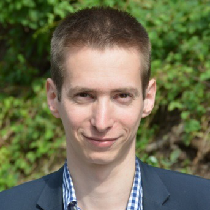
Ligeti András a Tom Lantos Intézet (TLI) munkatársa 2015 óta. A TLI programmenedzsereként oktatási, kutatási és egyéb közösségi projektek szervezésével foglalkozik. Az Intézet András által vezetett „Zsidó élet és antiszemitizmus” programjának az elsődleges céljai a zsidó közösségek identitásának és társadalmi részvételének támogatása, az antiszemitizmus elleni fellépés illetve a holokausztemlékezés és emlékeztetés.
/ Andras Ligeti is working at the Tom Lantos Institute since 2015 as a programme manager. He is responsible for organising education, research and other community development programs. TLI’s “Jewish life and antisemitism” programme – managed by András – focuses on strengthening the identity and participation of the Jewish communities, combating antisemitism and remembering the Holocaust through education and culture.
EDUKÁCIÓS PROGRAM / Educational program
BARNA Orsolya (1987, Kecskemét) & PÁLINKÁS Bence György (1988, Budapest)
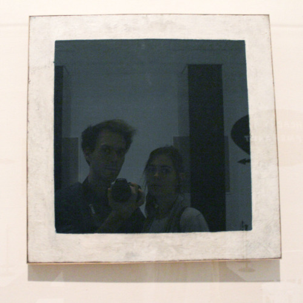
Barna Orsolya a magyar-esztétika alapképzés elvégzése után a Magyar Képzőművészeti Egyetem festő szakán tanult, jelenleg az ELTE kulturális antropológia mesterszakos hallgatója. Projektjeiben a művészet és különböző tudományterületek kapcsolódási lehetőségeit keresi. A Művészeti és Művészetelméleti Szakkollégium alapító tagja, a Vizuális- és környezetkultúra oktatás munkacsoport projektvezetője. Legutóbbi projektek, kiállítások: Művészek az iskolában bemutató, tranzit.hu, 2015; mass observation, OFF-Biennále Budapest, 2015; Vizkult Projekthét és kiadványbemutató, Labor Galéria, 2015; Elképzelt rokonság, Budapest Galéria, 2015.
Pálinkás Bence György képzőművész, jelenleg a Magyar Képzőművészeti Egyetem doktori hallgatója. A Vizuális- és környezetkultúra oktatás munkacsoport tagjaként 2013 óta foglalkozik a kortárs képzőművészet részvételre építő módszereinek közoktatásban való alkalmazásával. A Művészeti és Művészetelméleti Szakkollégium alapító tagja, a Tilos Rádió SKICC című műsorának szerkesztője, az FKSE projektszobájának szervezője. Válogatott projektjei: Multifilter, Fehér Éjszaka Kassa, 2013; kis köz, Labor galéria, 2013; Hősök Helye, Higgs Mező Galéria, 2014; Elképzelt rokonság, Budapest Galéria, 2015. Digitális portfólió
/ After receiving her Bachelor’s Degree in Hungarian and Aesthetics from Eötvös Lóránd University, Orsolya Barna continued her studies at the Hungarian University of Fine Arts as a painter. Currently she is completing her MA in Cultural Anthropology at Eötvös Lóránd University. She is trying to connect the practices of art with the practices of science in her projects. She is a founding member of the Advanced College of Art and Art Theory, where she is the project leader of the working group Visual and Environmental Culture Education. Recent projects, exhibitions: Művészek az iskolában bemutató, tranzit.hu, 2015; mass observation, OFF-Biennále Budapest, 2015; Vizkult Projekthét és kiadványbemutató, Labor Gallery, 2015; Elképzelt rokonság, Budapest Gallery, 2015.
Bence György Pálinkás, artist, currently a student at the Doctoral School of the Hungarian University of Fine Arts. As a member of the working group Visual and Environmental Culture Education he has been experimenting with the application of the participatory and cooperative practices of contemporary art in the course of public education. He is a founding member of the Advanced College of Art and Art Theory, and an editor of the radio show SKICC at Radio Tilos. He is the coordinator of the project room in the Studio of Young Artists’ Association. Recent projects: Multifilter, Fehér Éjszaka Kassa, 2013; kis köz, Labor galéria, 2013; Hősök Helye, Higgs Mező Gallery, 2014; Elképzelt rokonság, Budapest Gallery, 2015. Digital portfolio
ELMÉLETI SZÖVEG / Theoretical text
Jan ELANTKOWSKI (1987, Poznań)
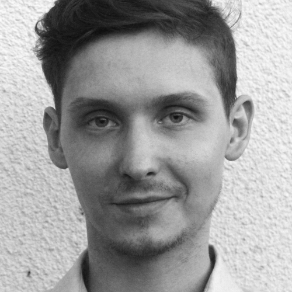
Jan Elantkowski művészettörténész, doktorjelölt az ELTE BTK Művészettörténet-tudományi Doktori Iskolában és megbízott oktató az ELTE BTK Művészettörténeti Intézetben (2014-2015). Jelenleg „Kollektív trauma kezelése két poszt-szocialista ország képzőművészetében: Magyarország és Lengyelország 1989 után” című doktori értekezésén dolgozik. 2015 decembere óta tudományos munkatárs a berlini Humboldt Egyetem Kelet-Európai Művészeti Tanszékén. Korábban Elantkowski vendégkutatóként dolgozott a Magyar Tudományos Akadémia Művészettörténeti Intézetében (2010-2011), kétszeres Intra-Visegrádi Alap ösztöndíjás (Nemzetközi Visegrádi Alap, 2010-2012). A Fiatal Képzőművészek Stúdiója Egyesület korábbi titkára (2015) és az FKSE Stúdió Galériában rendezett „Ön-olvasatok” című kiállítás társkurátora (2015, Iricsek Zsuzsannával). Az ArtGuideEast online magazin egyik szerkesztője. Szakmai oldal
/ Jan Elantkowski is an art historian, PhD candidate in the Doctoral School for Art History and a graduate teaching assistant in the Institute of Art History at Eötvös Loránd University in Budapest (2014-2015). Currently, he is working on his dissertation concerning the problem of collective trauma in art after 1989 from post-socialist countries on the examples of Hungary and Poland. Since December 2015 he has been working as a research fellow as the Chair for Art History of Eastern Europe at the Humboldt University in Berlin. Elantkowski is a former guest research fellow in the Institute for Art History of the Hungarian Academy of Sciences (2010-2011), two-time scholarship holder of the Intra-Visegrad Fund (International Visegrad Fund, 2010-2012), former program manager of the Studio of Young Artists’ Association in Budapest (2015) and co-curator of the exhibition “Self-interpretations” (Studio Gallery, Budapest, 2015). He also works as an editor in a Budapest-based online magazine ArtGuideEast. Professional page
GRAFIKA / Graphics
BOZZAI Dániel (1988, Budapest) & BALLA Csönge (1988, Ungvár)
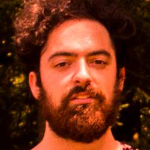
Bozzai Dániel a Magyar Képzőművészeti Egyetem Tervezőgrafikus hallgatója. Érdeklődése sokrétű, a grafikai tanulmányai mellett a művészet más ágai is érdekelik. Fest, rajzol, sokféle technikát kipróbál, megszerzett tapasztalataival pedig bővíti a tervezőgrafikai repertoárját. Fontos számára, hogy a manualitás megjelenjen a designban, ettől lesz egyedi.
/ Dániel Bozzai studies Graphic Design at the Hungarian University of Fine Arts. He has a wide range of interests, alongside his studies as a graphic designer he is open to other fields of art as well. He experiments with painting, drawing, and with various other methods, in order to apply his experiences in the course of his practice as a graphic designer. According to Bozzai, as far as originality is concerned the manual nature of the art piece has to be visible in a design.
DOKUMENTÁCIÓ / Documentation
SIMON Zsuzsanna (1988, Budapest)
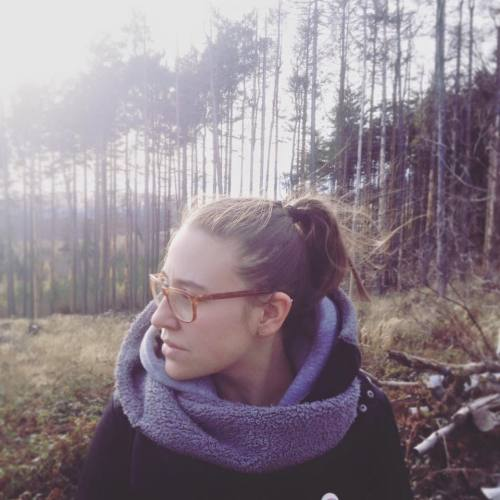
Simon Zsuzsanna, képzőművész 2015-ben végzett a Magyar Képzőművészeti Egyetemen, intermédia szakon. Jelenleg fotósként és videósként dolgozik Budapesten. 2015-től az Fiatal Képzőművészek Stúdiója Egyesület vezetőségi tagja.
/ Zsuzsanna Simon is an artist, she graduated from the Intermedia Department at the Hungarian University of Fine Arts in 2015. Currently she is working in Budapest as a photographer and videographer. She is a board member of the Studio of Young Artists’ Association.
FORDÍTÓ / Translator
ZSÁMBOKI Miklós (1987, Budapest)
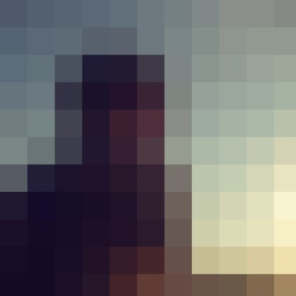
Zsámboki Miklós kurátor, kritikus, fordító. A Magyar Képzőművészeti Egyetem képzőművészet-elmélet szakán végzett. Írásai jelentek meg többek között az Élet és Irodalomban, a Magyar Narancsban, a Kreatív Magazinban, az Artmagazin Online-on és a tranzit.blog.hu-n. A Ludwig Múzeum – Kortárs Művészeti Múzeum kiadványszerkesztő munkatársa.
/ Miklós Zsámboki is a curator, an art critique and a translator. He received his Bachelor’s degree in Art Theory and Management from the Hungarian University of Fine Arts. His writings appeared in Élet és Irodalom, Magyar Narancs, Kreatív Magazin, Artmagazin Online and tranzit.blog.hu. He works as the editor of Ludwig Museum – Museum of Contemporary Art.
WEB / Web
LUKÁCS Bence (1986, Budapest)
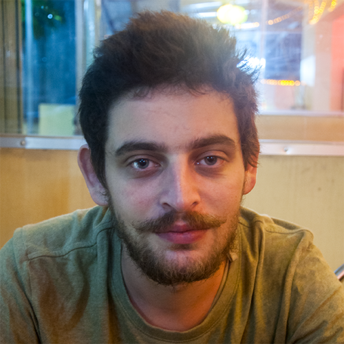
Lukács Bence szabadúszó web- és játékfejleszető programozó, hobbi-kurátor. Gyerekkora óta foglalkozik programozással, egy ideje weboldalak és interaktív webes felületek fejlesztése képezi fő tevékenységi körét. Néhány munkahely után inkább a szabadúszó életmód mellett tette le a voksát, így marad ideje az önálló projektekre is. Újabban a játékfejlesztés világa felé kacsintgat, valamint tapasztalatai dokumentálásra saját blog készítésébe fogott. Publikus projektjei: Fényújság, 2013; A mind1 Átka, 2014; Szakadjki (Bánkitó Fesztivál interkatív kampány), 2014; Szvupp Pojátri, 2012-2014; Messzire Közelebb, 2015.
Bence Lukács is a freelancer web and game developer and hobbyist curator. He has been programming computers since his childhood. Websites and web-based interactive projects have been his main interests for a while now. After enough fixed, nine-to-five, employment he decided to pursue self-employment, sparing time at last for his own projects. Recently he has began dabbling in the field of game developement, and blogging his experiences. Public projects: Fényújság, 2013; A mind1 Átka, 2014; Szakadjki (Bánkitó Festival interactive campaign), 2014; Szvupp Pojátri, 2012-2014; Messzire Közelebb, 2015.